| A1 | 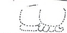 | Distance Number (eroded, probably 17 K'ins, 9 Winals, 1 Tun) |
| B1 | u-ti-ya TAN-LAM it had happened, the half-period ending | |
| A2 | Calendar Round: 12 (should be 11) Ahaw, 18 Ch'en | |
| B2 | 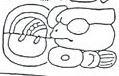 | i u-ti "and then it happened" |
| C1 | 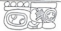 | Calendar Round: 9 Kaban 5 Pohp |
| D1 | 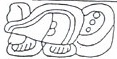 | chu-ka-ha "he was captured" |
| C2 | 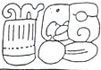 | Tah Mo-o "Torch Macaw" |
| D2a | 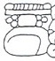 | "He of Machaquila" |
| D2b | 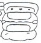 | u B'AK "his captive" |
| E1 | 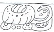 | B'a-la-ha |
| F1 | 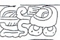 | Chan K'awiil |
| E1 | 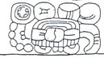 | K'uhul Mutul Ahaw "Holy Lord of Mutul" |
| F2 | 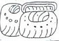 | B'a-ka-b'a |